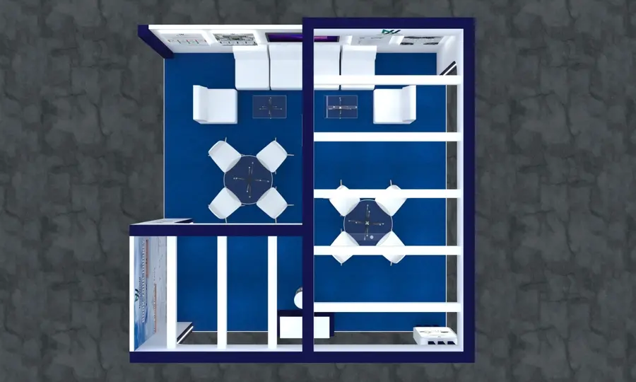

How Expo Stall Fabrication Works: From Brief To Show Floor
What actually happens between approving a stall design and walking onto a finished stand — the stages, the materials, realistic timelines and what to prepare.
By Expo Stalls Fabrication · Published 3 October 2026

Expo stall fabrication is the process of turning an approved exhibition stand design into a physical structure — cutting, building, finishing, printing and assembling every component — before it is transported to the venue and installed.
Design decides what your stand should look like; fabrication decides whether it can actually be built, moved and assembled inside a hall's tight move-in window. A good fabrication process takes the stall design and 3D render, converts them into workshop drawings, and builds the stand from carpentry, metalwork, graphics, lighting and flooring.
It sits between two other services that are often bundled with it: design before, and installation after. When one team handles all three, nothing is lost in handoffs between separate vendors.
Every project differs, but most custom stalls follow the same sequence from brief to dismantling.
Brief & Booth Details
You share your hall and stand number, booth size, open sides, brand guidelines and any must-have features such as meeting rooms, storage or product displays.
Design & 3D Render
The layout is drawn and visualised in 3D so you can judge materials, lighting and traffic flow before anything is cut. See 3D exhibition booth design.
Workshop Drawings & Materials
Once the design is approved, it is converted into build drawings, a materials list and a cutting plan.
Fabrication
Carpentry, metalwork, printing and finishing take place in the workshop. Panels, frames, counters, fascias and graphics are built as transportable sections.
Dry Assembly & Quality Check
The stall is assembled in the workshop first so fit problems, finish defects and lighting issues are caught before site delivery.
Transport & Installation
Sections are packed, transported and assembled on site within the organiser's move-in window, including electrical coordination.
Supervision & Dismantling
The team stays available during the show and removes the stand at the end, within the move-out schedule.
Most stalls combine a small set of materials, chosen for weight, finish and how many times the stand will be reused.
- Wood and MDF panels for walls, counters and fascias, finished with laminate, paint or printed graphics.
- Metal and aluminium frames for structure, truss-style elements and load-bearing parts. See our aluminum exhibition frames for reusable systems.
- Printed graphics — vinyl, fabric or backlit prints for branding.
- Lighting and electrical — spotlights, LED strips and power points, coordinated with the venue's electrical rules.
- Flooring — raised or carpeted platforms, depending on the hall and design.
If you plan to exhibit repeatedly, ask about modular exhibition booths, which are built once and reconfigured for different booth sizes.
As a general guide, allow 4 to 6 weeks for a standard shell-scheme fit-out or modular booth and 8 weeks or more for a fully custom stall that needs design sign-off, procurement and a full build. Tight timelines are sometimes possible, but they leave less room for revisions.
The biggest delays almost always come from late design approvals, late branding artwork and unconfirmed hall details — not from the build itself. Sending final artwork and organiser's manual requirements early keeps the schedule realistic.
Expo Stalls Fabrication builds stalls in its own workshops in Karachi and Lahore. Each workshop is located in the basement of the respective office, so the people who design your stand are close to the people who build it, and clients can arrange a visit to see work in progress. Stalls for events in other cities are built at the closest suitable workshop and delivered to the venue. See our exhibition stall fabrication service for details.
Fabrication cost depends mainly on booth size, materials and finish, the amount of custom joinery and lighting, graphics, and transport to the venue. As an indicative reference, a 10×10 ft booth typically starts from around PKR 94,499, and every project is quoted against the final drawing. Our exhibition stall cost guide lists starting prices by booth size and type.
- Hall, stand number and booth dimensions, including open sides
- The organiser's exhibitor manual and any height or electrical restrictions
- Brand guidelines, logo files and final graphics (or a date when they will be ready)
- A list of products, furniture or equipment the stand must hold
- Show dates, move-in and move-out slots, and your budget range
Frequently Asked Questions
What is expo stall fabrication?
Expo stall fabrication is the building of an exhibition stand — its structure, panels, counters, graphics and lighting — in a workshop, followed by transport and on-site assembly at the exhibition venue.
What is the difference between exhibition stall design and fabrication?
Design is the planning stage: layout, look and 3D visuals. Fabrication is the physical build of that design. Many companies, including Expo Stalls Fabrication, handle both so the stand is designed with its build in mind.
How far in advance should I start?
Around 4 to 6 weeks ahead is a reasonable minimum for a shell-scheme or modular stand, and 8 weeks or more for a custom stall. Peak exhibition months need earlier booking.
Can a stall be reused after the show?
Modular and aluminium-frame systems are designed to be reused and reconfigured. Fully custom builds can sometimes be partly reused, depending on how they were constructed.
Do you build stalls for events in other cities?
Yes. Stalls are built at our Karachi or Lahore workshop and delivered to venues across Pakistan, with installation handled by our team.
Planning An Expo Stall?
Share your show, booth size and dates, and we will confirm what is realistic for your timeline.